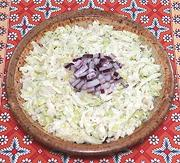

|
Leek & Apple SlawPoland - Surówka z Porem i Jabłkami | ||||
| Makes: Effort: Sched: DoAhead: |
14 oz ** 25 min+ Best |
A really amazing Slaw! Leeks are a popular vegetable in Poland, used in many recipes. Raw salads of shredded vegies are very popular there, and don't wilt on the buffet. | |||
|
8 7 ----- 2 2 1/2 1/3 ----- |
oz oz --- T T t t --- |
Leeks (1) Apple (2) -- Dressing Mayonnaise Yogurt, plain Salt Pepper (3) --------------- |
Make - (25 min + 1 or more hrs rest)
|